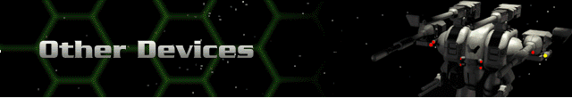

› |
› |
Other Devices |

Sensor Amplifier – increases the hex range of any mounted sensors.
Shield Amplification Crystal – boosts the rate that your Shields regenerate; does not create an instant boost, but proves invaluable through the course of battle.
Overdrive Node – boosts the efficiency of your Herc’s drive system.
Re-supply Drones – restock your Herc’s weapons during battle. The bigger the drone, the more times you’ll be able to restock your Herc’s weapons.